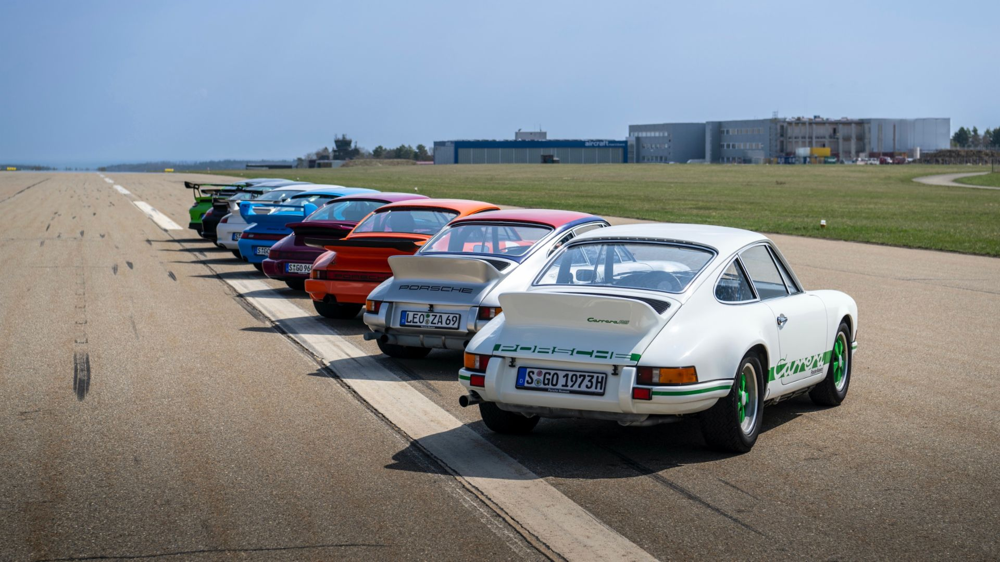

El Newsroom de Porsche es un servicio ofrecido por el Departamento de Comunicaciones de Porsche para periodistas, blogueros y la comunidad en línea.
Puede acceder al sitio oficial de Porsche AG en
© 2023 Dr. Ing. h.c. F. Porsche AG.
*La información presentada acá fue obtenida utilizando los procedimientos de homologación Euro 5 (715/2007/EC, 692/2008/EC, 566/2011/EC y ECE-R 101) y del Nuevo Ciclo de Conducción Europeo (NEDC). Las respectivas cifras no fueron recopiladas con vehículos individuales y no constituyen parte de la oferta. Esta información es proveída solamente con propósitos comparativos entre modelos respectivos. El consumo de combustible fue obtenido con vehículos con equipamiento estándar. Los equipamientos opcionales pueden afectar el consumo de combustible y el rendimiento de los vehículos. El consumo de combustible y las emisiones de CO₂ no son determinadas únicamente por el consumo de combustible, sino por el estilo de conducción y otros factores independientes a las especificaciones del vehículo.